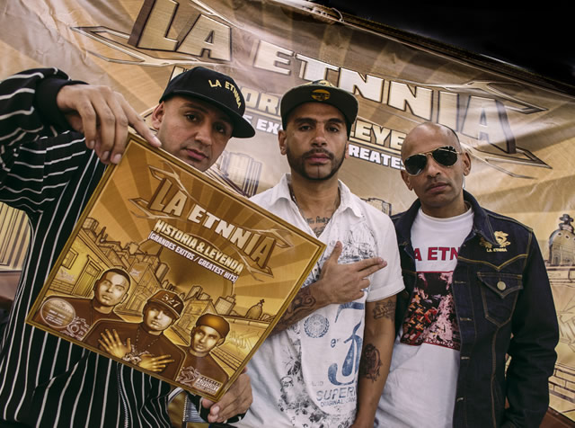

IXRXA
(INFECCION, RESPIRATORIA, AGUDA), por otra parte, es una agrupación emblemática en la escena musical de Medellín y Antioquia, con raíces que se remontan a la década de 2000. Es reconocida principalmente por fusionar el rock y el rap, creando una mezcla poderosa y original que les ha permitido conquistar diversos públicos. I.R.A. tuvo una participación clave en festivales importantes como el Festival Internacional Altavoz desde sus inicios en 2004, consolidándose como un símbolo de la escena rockera y urbana en la región. Su música refleja la rebeldía y fuerza de una juventud que busca espacios de expresión y transformación social a través del arte
LA ETNIA
La Etnia es una banda local de rap que se ha destacado por su compromiso con las causas sociales y la representación de la juventud de Antioquia. A través de sus letras, Etnia aborda temas cotidianos que afectan a su comunidad, como la desigualdad, la violencia y la búsqueda de identidad. Su música es una plataforma para dar voz a quienes a menudo no son escuchados, y su estilo combina la denuncia social con un mensaje de esperanza y resistencia. La banda se ha convertido en una referencia importante dentro del movimiento de rap regional, siendo parte activa de festivales y eventos que promueven la cultura urbana y el empoderamiento de los jóvenes